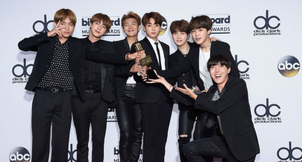

Comienzos
BTS hicieron su debut el 13 de junio de 2013, con siete miembros (RM, Jin, Suga, J-Hope, Jimin, V y Jungkook) con la contundente canción de hip-hop “No More Dream”. Desde el principio hablaron sobre problemas sociales, tales como los adolescentes sobrecargados siendo estafados por sus sueños. Era claro desde el exterior que tenían algo diferente, ayudados por el apoyo de RM y Suga en el hip hop underground. Los siete músicos compartían una habitación. Su empresa, Big Hit Entertainment, era una pequeña compañía dentro de una industria controlada por las “tres grandes” empresas del k-pop (SM, YG y JYP Entertainlent). Así que, a pesar del meteórico ascenso de la banda, hicieron su debut como desaventajados. Sin embargo, ya había indicios de su futuro éxito cuando su primer single alcanzó el número 14 en la lista de canciones digitales mundiales de Billboard dos semanas después de su lanzamiento. Al mismo tiempo, recibieron el reconocimiento en Corea del Sur como el “Mejor Artista Nuevo” en los Melon Music Awards 2013.
Ascenso a la fama

De vuelta en 2014, los chicos repartieron folletos promocionando un concierto durante su reality
show American Hustle Life. Pero ahora están vendiendo estadios internacionales en 90 minutos.
¿Como consiguió BTS esto? Su logro paso en dos escenarios: primero en Corea del Sur y luego
en
Estados Unidos.
Las fans a menudo hacen referencia a la primera victoria de BTS en el programa musical
surcoreano The Show en 2015 como un enorme momento en su historia. El single ganador I Need U no
solo representó un significante estilo de partida para los chicos, sino que también les dio un
extendido reconocimiento.
En 2017, el grupo ganó el premio por Top Social Artist en los Billboard Music Awards. En
aquel
momento, ya era un reto lo suficientemente importante que BTS fueran invitados a la ceremonia.
¿Pero
para vencer contrincantes como Justin Bieber, Selena Gómez y Ariana Grande? De repente, la
prensa
convencional estadounidense pudo ver que BTS estaban dirigiendo un fenómeno que merecía
reconocimiento.
Mayores logros
La banda obtuvo su primera entrada a los Billboard 200 en el número 171 con The Most Beautiful
Moment in Life, Part 2 en 2015. Desde entonces, sus logros se han disparado.
Como hemos mencionado, 2017 fue el año en el que BTS verdaderamente cruzó a la corriente
principal estadounidense. Sus apariciones en las televisiones estadounidenses ese año incluían
estar
en The Late Late Show con James Corden, Jimmy Kimmel Live y el show de Ellen DeGeneres. La banda
hizo su presentación debut en los American Music Awards en 2017, aumentando su fama
internacional.
Pero 2018 es el año en el que BTS parecía romper récords casi cada día. Ellos se
convirtieron
en el primer grupo de k-pop en actuar en los Billboard Music Awards cuando presentaron Fake
Love.
Acumularon numerosas certificaciones de oro RIAA. Y sus últimos álbumes llegaron al número 1
en
las listas de álbumes de los billboard 200 en el espacio de unos pocos meses.
Las súper estrellas coreanas también nombraron a algunos de los artistas más grandes de
Occidente para diversas colaboraciones, incluidos Nicki Minaj, Andrew Taggart y Steve Aoki y The
Chainsmokers.